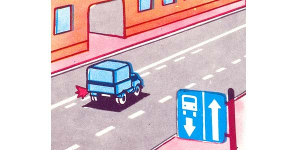
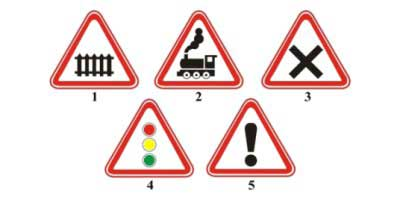
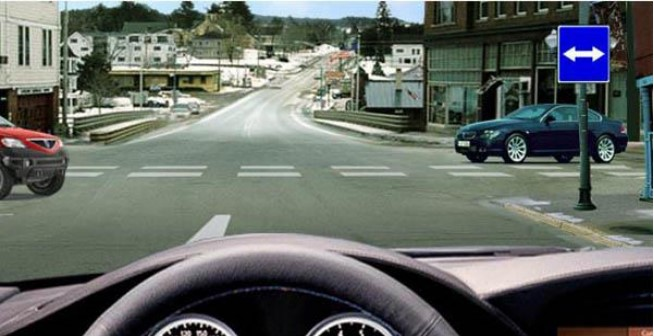
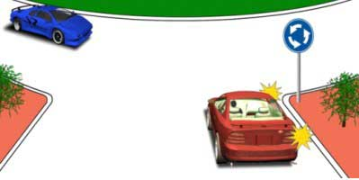
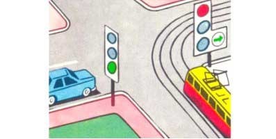
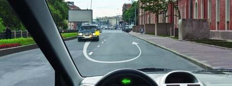
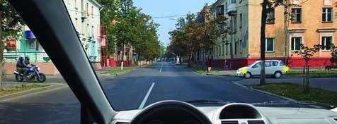
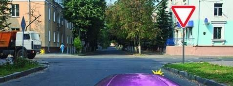
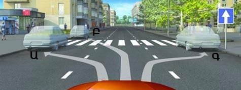
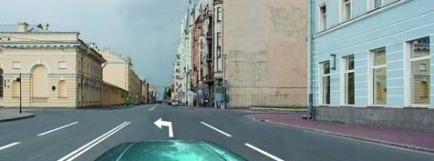

Թեստ 5
30:00
1. Պարտավո՞ր է արդյոք վարել սովորողն ուսումնական վարման ժամանակ ամրակապվել անվտանգության գոտիներով:
2. Վերադասավորում է համարվում
3. Տրանսպորտային միջոցների շահագործումն արգելվում է, եթե`
4. Տրանսպորտային միջոցների շահագործումն արգելվում է, եթե
5. Թույլատրվու՞մ է արդյոք մուտք գործել բակ նշված տեղից:

6. Ճանապարհի վտանգավոր հատվածի տեղամասից ի՞նչ հեռավորության վրա են տեղադրվում այս նշանները բնակավայրերում:

7. Հետևյալ ճանապարհային նշանը ցույց է տալիս`

8. Ո՞ր տրանսպորտային միջոցի վարորդն ունի առաջնահերթ երթևեկության իրավունք:

9. Ավտոմոբիլը խաչմերուկը կանցնի`

10. Դուրս գալով ճանապարհ այս իրավիճակում պարտավոր ենք զիջել
11. Շարժումն սկսելիս պարտավոր եք արդյո՞ք զիջել ճանապարհը հետադարձ կատարող վարորդին

12. Ո՞ր բակ է թույլատրվում մուտք գործել վարորդին

13. Երթևեկությունն ուղիղ շարունակելու դեպքում

14. Այս իրավիճակում աջ շրջադարձը թույլատրվում է

15. Եթե երկաթուղային գծանցով երթևեկությունը արգելված է և բացակայում է լուսացույցը, ճանապարհային նշաններն ու գծանշումը, ապա վարորդը պետք է կանգ առնի`
16. Ավտոբուսով երեխաների կազմակերպված խմբեր փոխադրելիս սրահում պետք է գտնվի առնվազն`
17. Ո՞ր դեպքում օրվա լուսավոր ժամանակ մոտոցիկլի վրա պետք է միացված լինի լապտերների մոտակա լույսը:
18. Նշվածներից ո՞ր դեպքում է թույլատրվում կանգառ կատարել

19. Նշված իրավիճակում ուղիղ երթևեկելն
